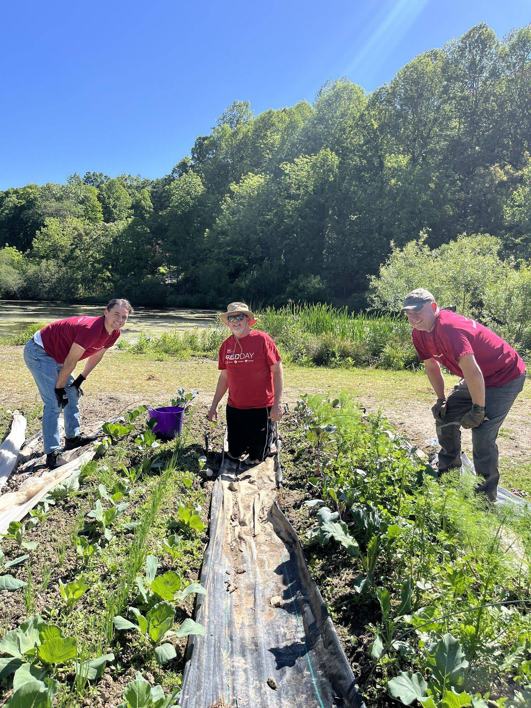
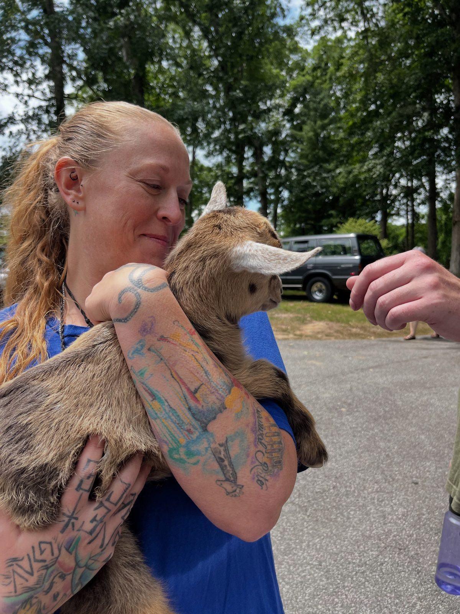
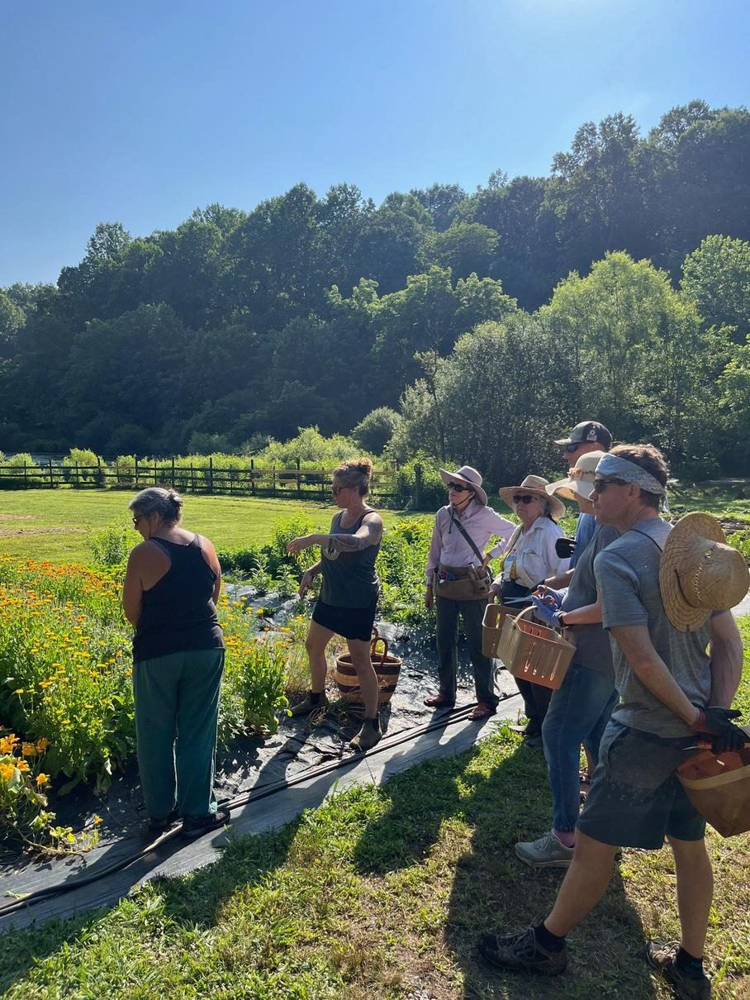
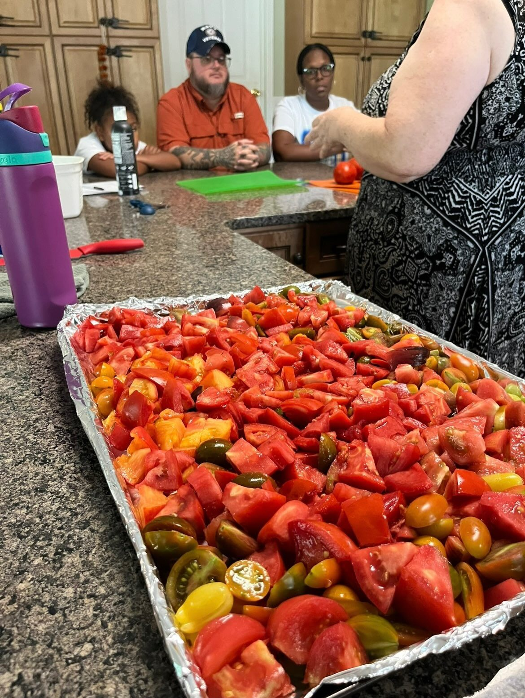
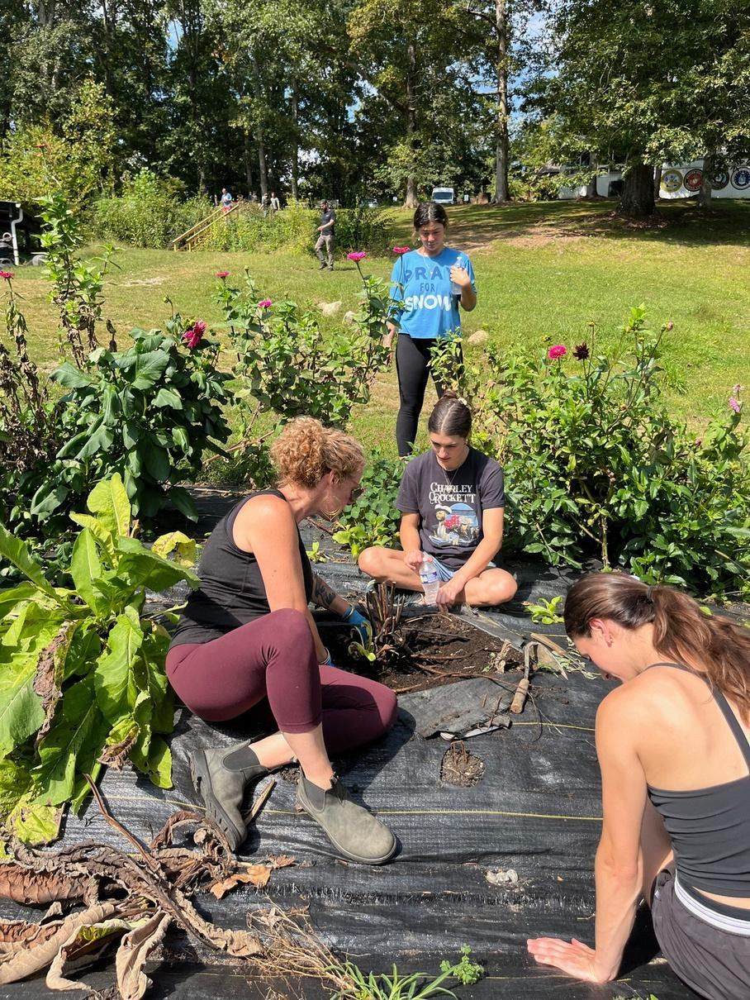
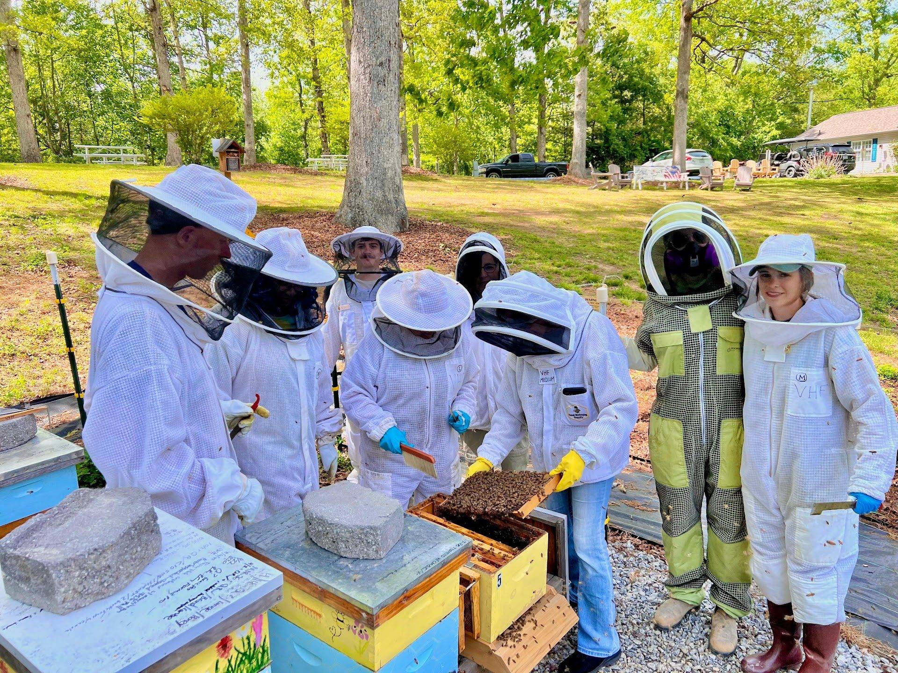

Veterans Healing Farm · Mills River, NC
Healing that grows from the ground up
Veterans Healing Farm is a nonprofit farm in Mills River, Western North Carolina, where veterans and their families heal through hands-on farm work and community. Every program is free to veterans and their families.
 Register on Race Roster (opens in a new tab)
Register on Race Roster (opens in a new tab)
2026 Veterans Day 5K
- Date
- Sunday, November 8, 2026
- Times
- Fun run loop 9:45 AM · Race starts 10:00 AM
- Where
- Mills River Park, 124 Town Center Dr., Mills River
- Why
- A fundraiser for the farm

Give through PayPal (opens in a new tab)Help veterans heal this season
- When
- Any time this season. Giving Tuesday is December 1, 2026.
- How
- Online through PayPal, one time or monthly. You don't need a PayPal account.
- Who
- A 501(c)(3) nonprofit serving veterans and their families in Western North Carolina since 2013

Our approach
How healing happens here
The farm is a calm, safe place to spend a morning. Pull weeds, plant starts, pick tomatoes, or suit up to check the hives, side by side with people who understand.
We call it agritherapy: hands-on farm work, shared with others. Along with our workshops, it supports the mental, emotional, and physical well-being of veterans and their families.
We give away everything we grow, to veterans and to local groups that help people in need.
- Organic farming
- Beekeeping
- Medicinal herbs
- Therapeutic workshops
- Community and camaraderie
At a glance
The farm's 2026 season in numbers
What veterans, volunteers, and partners grew together.
These numbers come from our 2026 Year-End Report (opens in a new tab). See the full year on Our Mission & Farm
Get involved
Volunteer, sponsor, or give
There's a place for everyone at the farm. Bring your hands, your business, or a gift.
Volunteer
Work beside veterans in the gardens, the herb beds, or the bee yard. No experience needed.
Sign up to volunteerSponsor
Businesses, clubs, foundations, and families can partner with the farm as sponsors.
Become a sponsorDonate
Your gift keeps farm programs going for veterans and their families.
Make a donationFrom the field
Life on the farm
Planting, harvesting, tending bees, sharing meals, and building friendships that last.





In their words
What people say about the farm
“They are a wonderful asset for the Veteran Community; … they give away thousands of pounds of produce and hundreds of bouquets of flowers to veterans every year; and they provide a family to many veterans.”
“I have volunteered here numerous times. The mission that they support is worth your time supporting. The people and atmosphere are always welcoming. Support your local veterans!”
“Phenomenal mission in a beautiful setting with amazing people. Highly recommend!”
Words to grow by
“Healing is not an overnight process. It is a daily cleansing of pain, it is a daily healing of your life.”
— Leon Brown